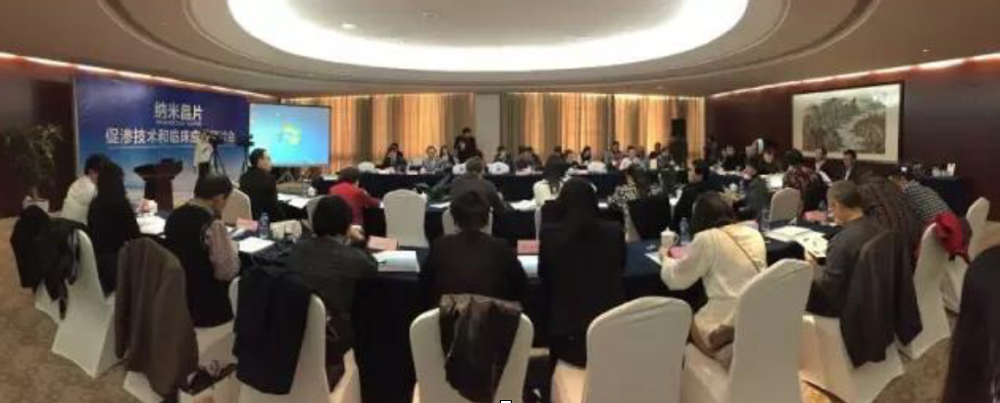
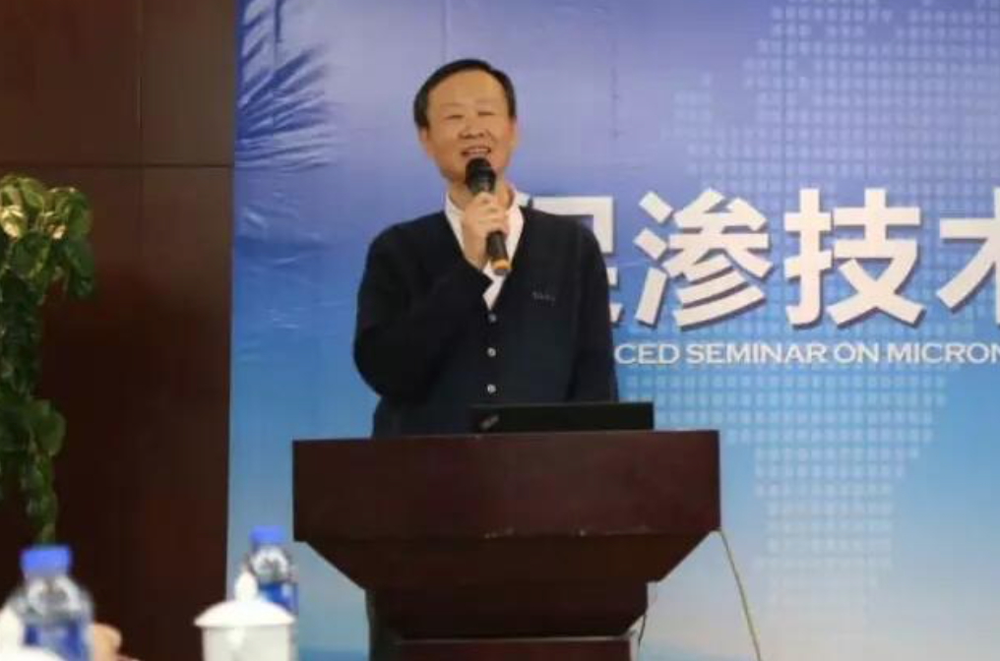
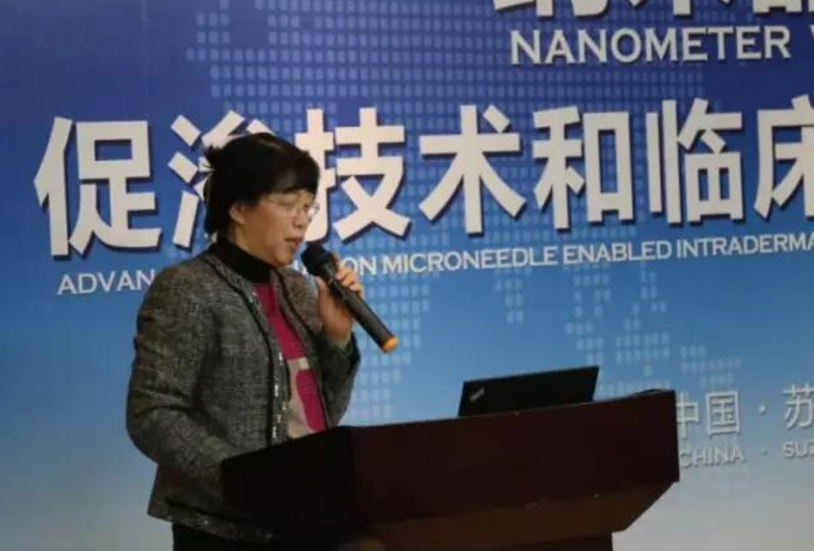
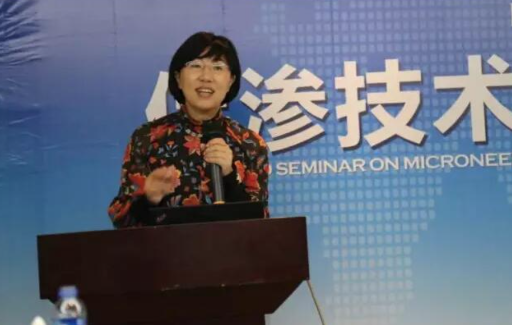
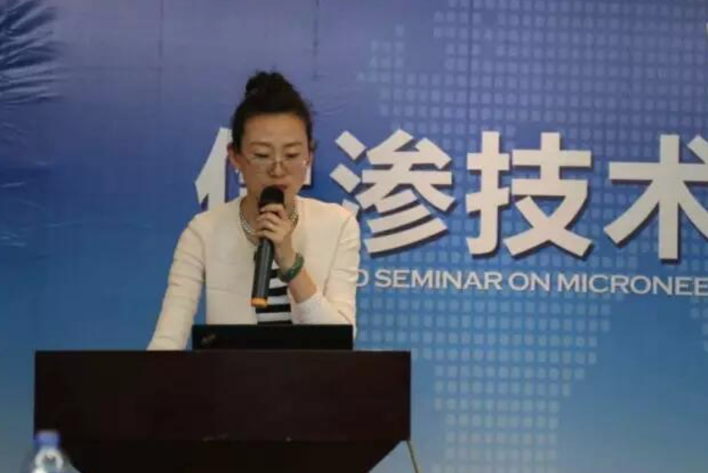
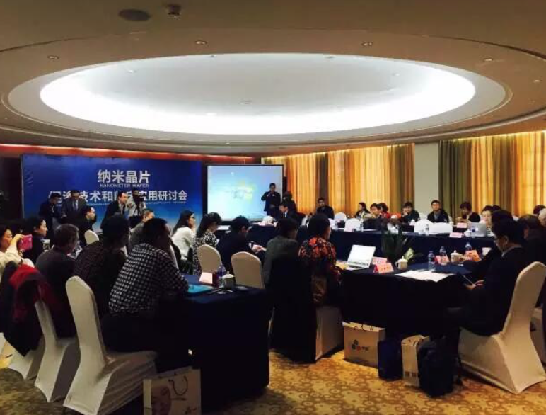

中国最顶级的皮肤科医生们如何看待水光针？
2016年3月5日，世界中医药学会联合会经皮给药专业主办的第二届“纳米晶片促渗技术和临床应用研讨会”在苏州展开。
距离首届会议短短数月时间，“纳米晶片促渗技术“给医疗美容和生活护肤带来的无限可能性对参议专家提供了创新型的治疗方法，皮肤科的专家们纷纷要求再开一次。
苏州纳通公司徐百博士应邀承办本次会议，相约全国40多位专家再聚美丽的人间“天堂”——苏州。
百忙之中能邀请到40多位全国著名皮肤科相关专家相聚一堂，大家定是争分夺秒地各抒己见。
骆丹教授竟然分秒未差地在15分钟发言时间内分享了“纳米晶片配合氨甲环酸治疗黄褐斑方法”，让在场诸位啧啧称奇。
“纳米晶片”作为近年来风靡全国的促渗技术，在美容护肤中得到了较为广泛应用。而消费者也许并不熟悉的是，“纳米晶片”在进入美容市场之前，已经经过了徐百博士领衔的国际科研团队经过长达15年的开发，并在国内的医学临床中得到应用。会议中，各专家分别对“纳米晶片“应用于美容护肤、皮肤疾病治疗、中医透皮给药分享了心得与期待。
对苏州“小桥流水”颇感小确幸的梁秉文会长，回顾了上一届会议对于“经皮给药”发展的意义，并肯定了本次会议的重大意义。同时，他也表示纳米晶片作为典型的创新型技术应用成功案例，应该分享给此次会议的参议者。
吴刚会长肯定了“纳米晶片”大幅提高护肤品吸收效率的不菲成就，纳晶得到了国内外、业内外的一致认可，并“抛砖引玉”地提出了“纳米晶片”将应用于传统中医的梅花针、针灸。
纳米晶片”仅为普通微针的千分之一大小，江苏省人民医院的骆丹教授研究的“纳米晶片配合氨甲环酸治疗黄褐斑”已得到了充分应用，并大幅提升了“黄褐斑”治疗效率，减少病患的痛苦。
“面部肌肤年轻化，透皮吸收技术”刘玮院长的发言内容简明扼要地表达了国内护肤品市场的现状。“安全”是过去护肤品市场的主流需求，而如今不仅要“安全”，更要“有效”，透皮吸收技术则成为了转型的关键词。
相比于促渗剂等化学促渗的不稳定性，国内的专家更偏爱使用相对稳定的物理促渗技术。国内目前火热的“光”、“电”、“超声”、“微针”等物理促渗技术中，“纳晶水光”是首个真正意义上无创导入玻尿酸的技术。
李远宏教授是中国医科大学附属第一医院皮肤科副主任，同时也是著名医美行业的自媒体爱美医生的创始人。
对于“纳米晶片”于皮肤疾病的临床应用有着丰富的经验。她分享了使用纳米晶片治疗皮肤丘疹、妊辰纹甚至导入生长因子治疗脱发的经验。
“皮肤淀粉样变”是造成患者极大痛苦的皮肤病变，“毛周角化”是带给青少年无限烦恼的皮肤疾病。
这两种皮肤病的共同特点是治疗成本大、效果微弱，田燕教授首创“纳米晶片”配合导入“果酸”治疗法，大幅提高了皮肤科中疑难杂症的治疗效率，减少患者了治疗成本和痛楚。
北京301总医院的赵华主任对“纳米晶片”的认知与研究已长达9年，对纳米晶片的人体临床研究有着深刻的见解。她用自己9年严谨治学的态度，向在场各位专家验证了纳米晶片的安全性和有效性。
同时，她表示纳晶在表皮麻醉和痤疮领域有着良好的疗效，可以作为无创导入的方式在皮肤科推广。
中医学专家张路，戏称自己是“玩针的人”。对针的独到理解，让他第一次见到“纳米晶片”就联想到它对于中医发展的巨大潜力。
他表示，将用突破传统中医针灸的局限性，开发“纳晶梅花针”用于治疗“头部带状疱疹”等疑难杂症。
同时，他还将“纳米晶片”与“慈禧宫廷御方”结合，推出“宫廷御方亮肤驻颜美容”等国际旅游项目。
对创新新科技严谨的态度，贯彻张庆瑞主任的研究过程。首次接触“纳米晶片”时，他利用“大鼠荧光”实验，验证了“纳晶打开肌肤通道”、“纳晶皮下导入”、“纳晶肌肤通道自动愈合”等多项纳晶技术，为众多专家提供了重要参考文献。
他表示，纳晶的发明者徐百博士是一个非常严谨的科学家，纳米晶片打开肌肤屏障将会在皮肤美容中得到广泛的应用。
本次活动承办方：苏州纳通生物纳米技术有限公司，创始人徐百博士，同时也是“纳米晶片”技术的发明者，在会议中与各专家进行深度交流。
纳米晶片作为全球透皮给药发展研究过程中，一项重要的创新型技术，已经获得了12项发明专利，国内9项，国外3项，在很大范围的应用得到普及和认可。
未来，已来。或许，它将成为“透皮给药”发展过程中一座新的里程碑。
